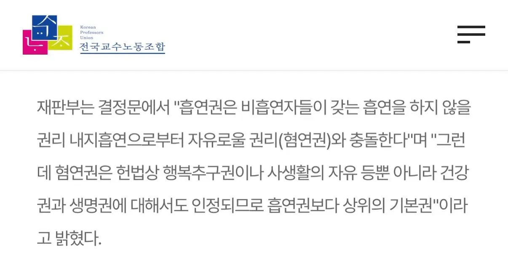
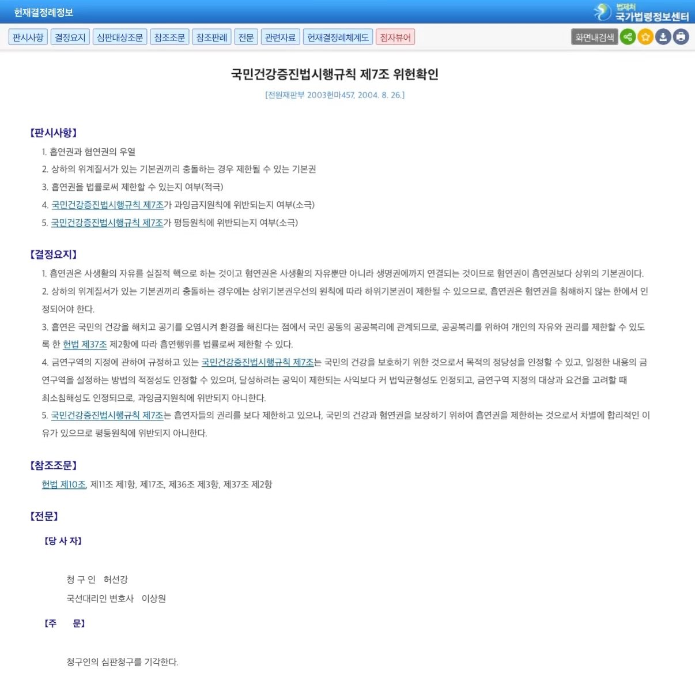

혐연권이 흡연권보다 더 상위 기본권임


혐연권이 흡연권보다 더 상위 기본권임
당연한소리를 이래까지 해야하는건가 ㅋㅋ
대법관이신가 규칙을 갑자기 법으로 올리나
노상방뇨의 자유를 달라
구석에 짱박혀서 피는건 좀 봐달라
요새는 구짱피 보면 집안에서 안피고 나와서 펴줘서 고맙다는 생각 들 지경임. 길빵도 ㅈㄴ 많고
또 헌법 전문가님 나오셨네 ㅋㅋㅋㅋㅋㅋ
왜? 법이랑 기싸움하게?
웃긴건 저 결정문은 흡연자 혐오랑은 전혀 관련도 없는내용이라는거임 ㅋㅋㅋ
담배피고 있는 새끼들한테 가서 뺨 후려치고
담배 뺏아서 얼굴에 담배빵 지져도 무죄란 얘기지?
흡연충 새끼가 "왜 때려요" 이 지랄 하면 혐연권 ! 씨발련아 혐! 연! 권! 하면서 들이받고
혐오만 하라는데 왜 때림
가위로 담뱃불 자르기!
다 지능문제야
네, 대한민국 헌법재판소 판례에 따르면 흡연권은 기본권 중 하나로 인정됩니다.
헌법재판소는 흡연권을 개인이 담배를 피울 자유로서 헌법 제10조의 행복추구권과 제17조의 사생활의 비밀과 자유에서 유래하는 정당한 기본권으로 보고 있습니다.
다만, 이 흡연권은 비흡연자의 기본권과 충돌할 때 다음과 같은 명확한 한계를 가집니다.
혐연권과의 충돌: 담배 연기를 거부할 권리인 혐연권(비흡연권) 역시 헌법이 보장하는 기본권입니다.
기본권의 위계질서: 헌법재판소는 혐연권이 사생활의 자유뿐만 아니라 인간의 생명권과 건강권에까지 직결되므로, 사생활의 자유가 핵심인 흡연권보다 더 상위의 기본권이라고 판시했습니다.
상위기본권 우선의 원칙: 따라서 법적으로 두 권리가 부딪칠 때는 하위 기본권인 흡연권이 제한될 수 있으며, 흡연자는 비흡연자에게 피해를 주지 않는 범위 내에서만 흡연할 권리를 가집니다.이러한 논리에 따라 정부가 국민건강증진법 등을 통해 실내외 금연구역을 지정하고 흡연을 제한하는 것은 헌법에 위배되지 않는 합헌적인 조치로 인정받고 있습니다.
흡연충 살ㅇ면허 생기면 흡연충 슬레이어 될 자신있는데
일본 갔다가 우리나라 오니까 흡연자들 새삼 불쌍해지더라.
건물마다 흡연부스가 있어서 굳이 밖에서 안 펴도 되는 곳 보다가 우리나라 흡연부스 보니까 너무 적음. 나 같아도 흡연부스 찾다가 지쳐서 밖에서 걍 필 것 같은 정도임
제정신인 사람들은 알아서 깔끔하게 "혐연권" 문제되지 않는선에서 끽연하고 꽁초도 쓰레기통에 잘 버림.
흡연부스가 많냐 적냐를 떠나서 그냥 연초담배 피우는사람들 기본적인 마인드가 후진국 수준에 머물러있음.
정상이면 그 배수로에 수많은 꽁초가 모일리가 없음.
차라리 베이퍼 타입의 전자담배가 더 나을지경임. 연초보다는 덜 해롭고, 화재위험이 덜하니깐.
심지어 담배 판매 세수보다 흡연으로 발생하는 사회비용이 3조 이상 더 많다고 집계됨 ㅋㅋㅋ